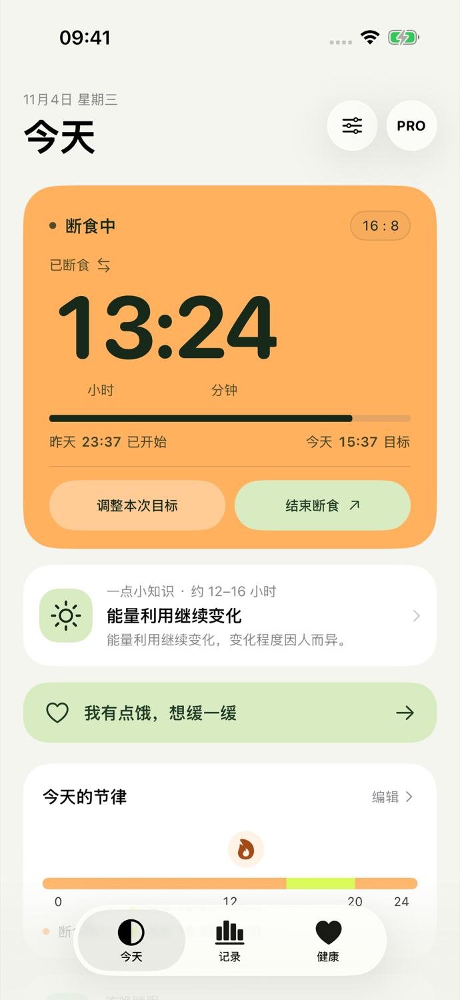
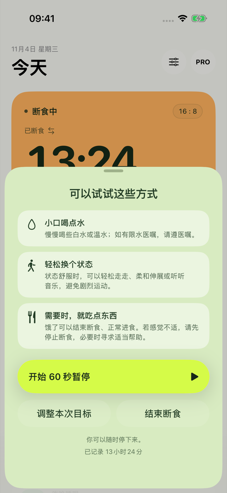
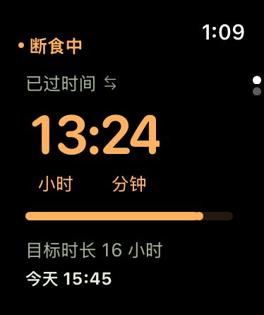
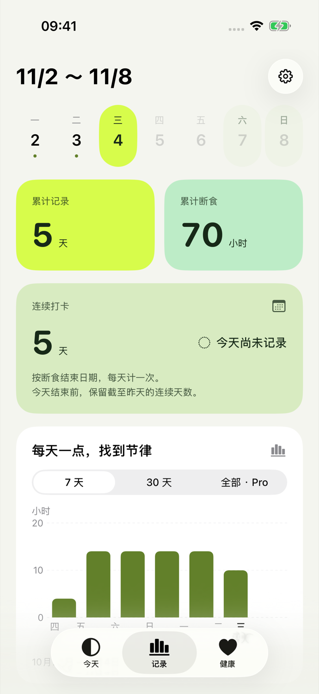
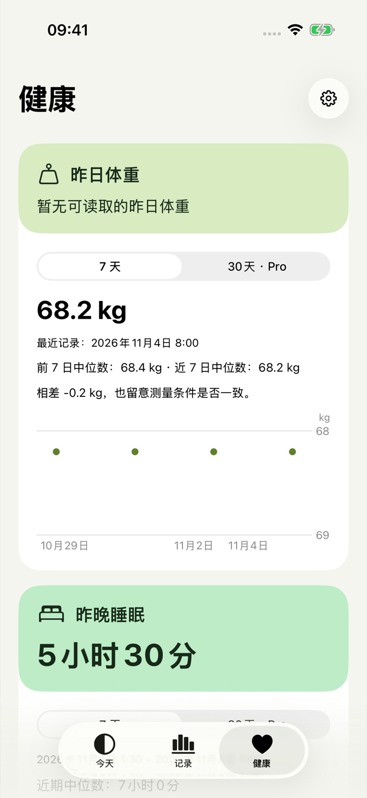

把节奏，留给自己
在 iPhone 和 Apple Watch 上查看大字计时，记录轻断食。当天作息随实际开始与结束更新，按需要调整。
试试你的作息适用于 iOS 18 及以上、watchOS 11 及以上
产品预览，尚未上架 App Store。

看看你的一天
选一个时长和开始时间，看看断食与进食时段怎样落在一天里。橙色表示断食，亮绿表示进食；应用中的时间轴会跟随你的实际记录更新。
静态示例：20:00 开始，次日 12:00 进食。启用 JavaScript 后可调整。
请输入有效的开始时间。
断食时段16 小时
进食时段8 小时
20:00 开始，次日 12:00 进入进食时段。
时间按你当前的地区格式显示。
此处仅演示作息，不保存或上传你的选择。
先停下来，听听自己
想吃东西时，给自己一段可选的 60 秒暂停。

先看看喝水、轻柔活动和需要时进食的建议。你可以选择暂停一分钟，也可以调整目标或结束记录。感觉不适时，请停止断食并寻求适当帮助。
让记录跟上生活
手机放下，也能看时间。计划变了，就按真实发生的情况记下来。
抬腕，就能看见
转动表冠或上下滑动，在计时与计划之间切换。直接开始或结束记录，手机不在线也能使用，重连后再同步。

记下实际的每一天
用周日期栏找到某一天，回看累计时长与连续打卡，也可切换 7 天或 30 天图表。免费版可查看最近 30 天记录，Pro 解锁更早历史。记录时间可以更正，记录也可以删除。

睡眠、体重和运动，一起回看
在独立的健康页，分别查看昨晚睡眠、昨日体重和运动的摘要与趋势。每一类都可单独切换图表周期。
7 天图表免费，Pro 可查看 30 天。健康数据按类别授权，来源在设置中管理，缺失的记录不会补成零。

断食记录在设备上
同一设备的应用与组件共享断食记录，配对的 iPhone 与 Apple Watch 通过系统连接同步。Fasting 没有自建数据服务器。
健康数据由你授权
可分别选择读取睡眠、体重和训练。最多 30 天的健康缓存仅留在 iPhone 私有目录，不进入手表或组件，也不写回 Apple 健康。
分享前，先由你看过
记录分享图可以隐藏数字和具体日期。晨间打卡图还可显示你选定的健康项目；分享前可逐项隐藏。
删除由你决定
在设置中删除全部数据。删除会在下次同步时传给配对设备；已经保存或分享的图片需在相应位置自行处理。
你可能想知道
Fasting 会告诉我该断食多久吗？
时长由你选择。应用提供 12:12、14:10、16:8 和 8–20 小时自定义目标，只记录你自主选择的作息。它不判断断食是否适合你，也不提供诊断或治疗建议。
达到目标后，会自动结束吗？
不会。达到目标只更新显示和可选提醒。你可以提前结束，也可以在准备好时结束；记录会保留实际起止时间。
必须连接 Apple 健康吗？
不需要。计时和断食记录不依赖 Apple 健康。健康类别按需授权，关闭某一类别后会停止查询，并清除该类别的本地缓存与相关提示。Apple 健康中的原始记录不受影响。
Apple Watch 需要手机在线吗？
本地计时和开始、结束操作不依赖手机在线。重连后记录会同步；若两端离线时各开始了一条记录，应用会请你选择保留哪一条。
免费版和 Pro 有什么区别？
计时、支持、Watch App、最近 30 天断食记录和夜色分享样式免费。Pro 是可选的一次购买，解锁完整历史、中号与锁屏组件、Watch 复杂功能、实时活动、30 天健康图表，以及晨光和手记分享样式。价格以应用商店显示为准。
现在可以下载吗？
目前是产品预览，尚未发布到 App Store 或 TestFlight。网页与应用均支持简体中文、繁体中文和英文；正式下载地址会在发布后补充。